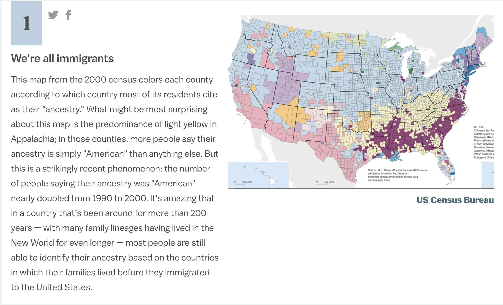

DigitalGlobe : a satellite imagery company
we launch satellites & use the imagery to create applications
a lot of our applications are created for the geospatial intelligence (geoint) community
UI/UX : User Interface & User Interaction
I design how software looks
all of our software is geospatial in nature
(hence Geospatial UI/UX Developer)
I also do cartography (I make maps)
& a little analysis
necessary skills for my job?
- a geospatial background
- coding
- I code primarily in JavaScript
- Python is a big one for analysts
- There are others
- knowledgable about opensource software
- designers' perspective
- capability to collaborate

MS in Geographic and Cartographic Science
GMU, 2015
BA in Geography (minor in GIS)
GMU, 2014
Why Geography?

Classes in HS?
GIS
Geographic Information Systems/Science
it's a tool that helps solve spatial problems
it can also refer to the science of geography and the science of solving these spatial problems
it can also refer to the science of geography and the science of solving these spatial problems
What is a spatial problem?

a spatial problem could be...
- Routing (how do I get from point A to B optimally?)
- Zoning (how do we draw district lines?)
- City Planning (where should the firestation go?)
- Health (why is this disease occurring more in this place, and how do we help it?)
- Why certain things occur in certain places
- What areas are most susceptible to floods
- What parts of DC is marijuana illegal?
Visualization
OR Cartography!
Why I like being a "modern cartographer"

- it's a fusion of art and science
- global scale
- dynamic maps
- involves code & allows for more flexibility & creativity
- more challenging in some ways (but also more simple)
- technology is constantly evolving...there is always something to learn!
{kind=link}
{kind=link}
my suggestions if you want to get in this field
- educate yourself on geography (theory), geographic data science (projections, coordinate systems, etc), and GIS
- learn a programming language (and master it... this will set you ahead)
- learn how to design a quality map
- learn how to manage a database
Utilize open source!
- QGIS vs ArcGIS
- Check out projects on GitHub (also good for learning how to code)